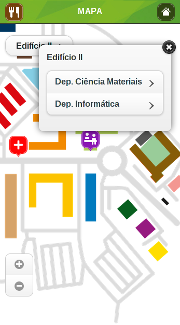
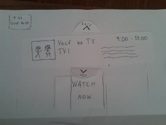
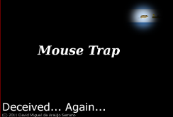
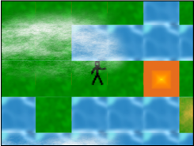

Who am I?
Hi there! My name is David Serrano, born in 1990, and I am a man who does the things he loves with great passion.
My greatest objective is to develop the best thing yet. Either be it a videogame, a web-site, a television set interface, the best web service.
In the Internet I am known as the N0_Named_Guy. I am computer science student, taking a masters at the moment. I've graduated from FCT-UNL and I hold a bachelor at computer science.
Contact
- Personal e-mail:
- david [dot] ma [dot] serrano [at] gmail [dot] com
- College e-mail:
- d [dot] serrano [at] campus [dot] fct [dot] unl [dot] pt
- Secondary e-mail:
- david [dot] nonamedguy [at] gmail [dot] com

Portfolio
-
Expo FCT 2013
(February 2013 - April 2013)- 
I was in the official Expo FCT 2013 mobile web application development team.
-
Kinect TV
(August 2012 - February 2013)- 
Research on an interface that will enable people to use their television without resorting to any kind of physical remote controls.
-
Mouse Trap
(August 2011)- 
A game that I made in 48 hours for a contest called Ludum Dare. It was based on the aMazing engine, listed below. The game's submission page can be viewed here .
-
aMazing
(June 2011 - August 2011)- 
Combining my passsion for building games, and the desire to learn the wonders of HTML5 and the canvas element, I set out to make this tile engine.
-
The Thief
(March 2011 - June 2011)This game consists on a thief who whishes to steal treasures. He must face many perils on his way either be it: guards, other thiefs, stray bullets and even lava!
-
-
Residential Website
(August 2010)Based of the Auto Guinot website, I made a site for a residential called Nosso Paraíso, located in the sunny Algarve. During my stay, I proposed the residential owners to build them a site. I took the Auto Guinot's code base, and over the week I stayed there, I made them the website. It is (or at least was) hosted at www.residencialnossoparaiso.com.
-
Auto Stand Website
(June 2008 - May 2009)A website I made on my free time for an auto stand. This job paid for my Nintendo Wii. It was originally hosted at www.autoguinot.pt, but the stand owners stopped caring about the website, so the website is down at the moment.
Awards and Achievements
-
Codebits 2007 Winner (Creativity Category)
Lisbon, Portugal, 2007
-
Honorable Mention at CJCI (Concurso Jovens Cientistas e Investigadores)
Lisbon, Portugal, 2008
-
Third Place, on the team CaparicaTuxz at MIUP'11 (Maratonas Inter-Universitárias de Portugal)
Faro, Portugal, 2011
-
SWERC (Southwestern Europe Regional Contest) contestant, on the team CaparicaTuxz
Madrid, Spain, 2011
-
Bronze Medal (fifth place), on the team AsymptoticFunctor at MIUP'12 (Maratonas Inter-Universitárias de Portugal)
Porto, Portugal, 2012
-
SWERC (Southwestern Europe Regional Contest) contestant, on the team AsymptoticFunctor
Valencia, Spain, 2012
It was a very disappointing run...